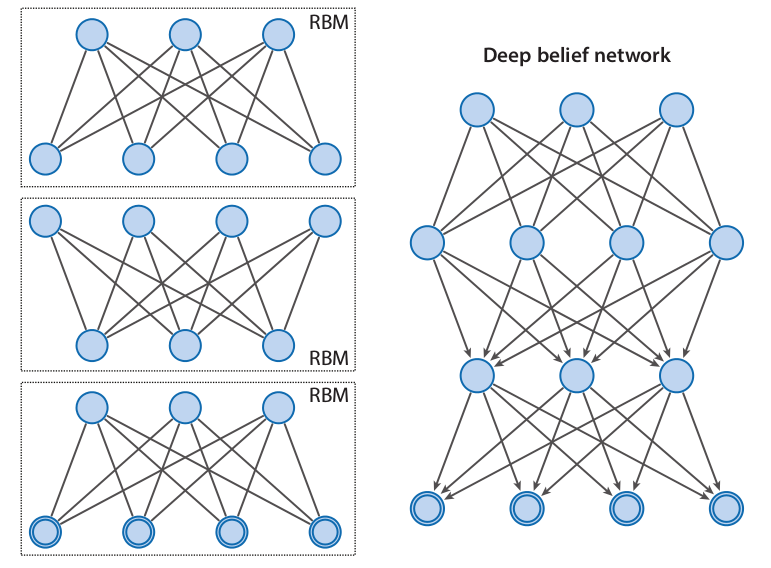
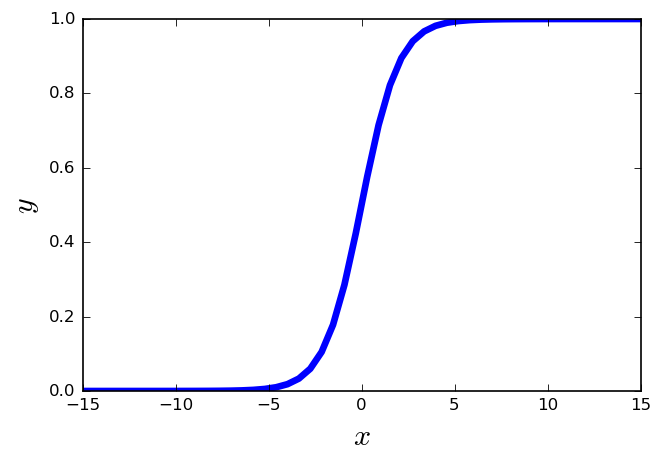
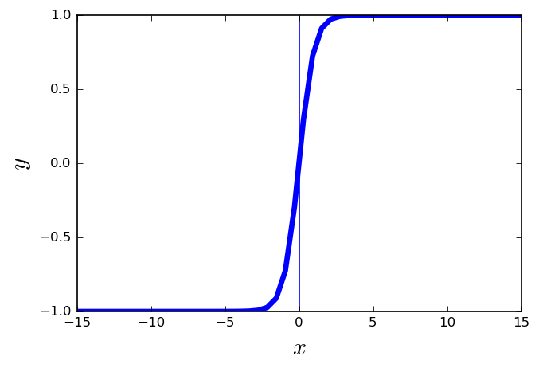
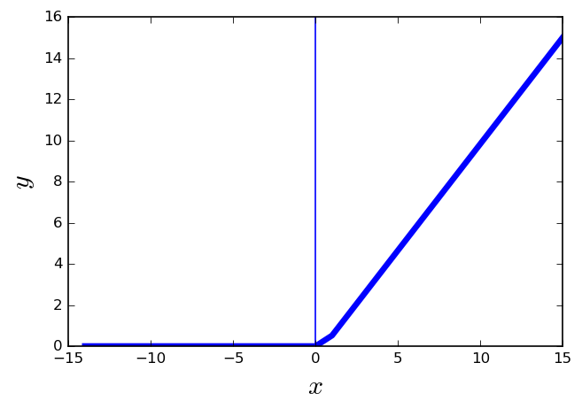
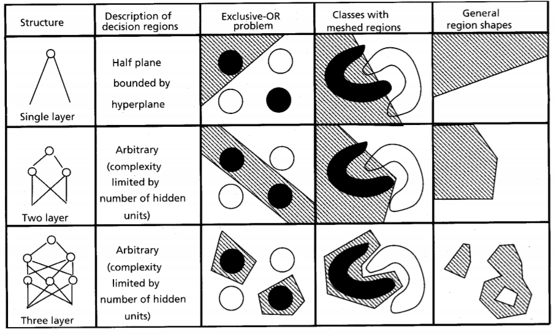
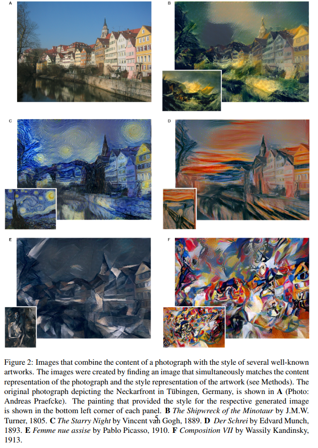

Machine Learning and Neural Networks
Roberto Santana
Department of Computer Science and Artificial Intelligence
University of the Basque Country
Deep Neural Networks: Table of Contents
Spiking Neural Networks

Advantages and limitations
- SNNs are formed by neuron models that communicate by sequences of spikes.
- They offer plausible models of neuronal mechanisms and neuron behaviors.
- They are powerful tools for analysis and understanding of elementary processes in the brain.
- Computationally more powerful than perceptrons and sigmoidal gates.
- However, they do not produce abstract, clearly decomposable, and interpretable representations of a problem.
MNIST Dataset.
Fashion-MNIST Dataset.
CIFAR Dataset.
Deep neural networks
Desiderata for Learning AI
- Ability to learn, complex, highly-varying functions.
- Ability to learn with little human input low-level, intermediate, and high-level representations.
- Ability to learn from a very large set of examples.
- Ability to learn from mostly unlabeled data.
- Ability to exploit the synergies present across a large number of tasks, i.e. multi-task learning.
- In the limit of a large number of tasks and when future tasks are not known ahead of time, strong unsupervised learning (i.e. capturing the statistical structure in the observed data) is an important element of the solution.
Y. Bengio. Learning deep architectures for AI. Foundations and trends in Machine Learning. 2.1. Pp. 1-127. 2009.
Deep Neural Networks
Goals
- Automatically discover problem representations of different complexity from the lowest level features to highest level concepts.
- Being able to scale to very large problems.
- Provide interpretable representations of the problem.
- Allow multi-task solving by re-using modular components of the network.
- Be robust to different transformations of the original training data.
Characteristics
- Are composed of multiple processing layers to learn representations of data with multiple levels of abstraction.
- Once the architecture has been defined, they require very little engineering by hand.
- Exploit the property that many natural signals are compositional hierarchies, in which higher-level features are obtained by composing lower-level ones.
- Good features can be learned automatically using a general-purpose learning procedure.
- They heavily depend on local optimization methods to tune their parameters.
Deep Neural Networks
Shallow and Deep Neural Networks
-

R. Salakhutdinov. Learning deep generative models. Annual Review of Statistics and Its Application. Vol. 2. Pp. 361-385. 2015.
Deep Neural Networks
Multiple layers

VGG in TensorFlow. 2016.
Components
- Structure: Characterized by a combination of:
- Activation functions.
- Layers.
- Loss functions.
- Activation functions: Using a combination of the inputs, determines whether the neuron is activated (fired).
- Sigmoid
- tahn
- ReLU, ELU, Leaky ELU, etc.
- Layers: Determine how the neurons are organized. Fully connected, recurrent, dropouts, convolutional and pooling.
- Loss functions: Establishes the criterion to evaluate the quality of NN model. Mean square error, cross-entropy loss, etc.
Activation Functions
-

Title. Details. 2015.
Sigmoid linear unit
- One of the most widely used activation functions today.
- \( f(x) = \frac{1}{1+e^{-x}} \)
- It is nonlinear in nature.
- The output of the activation function is always going to be in range \((0,1) \).
- It has the problem of the vanishing gradients.
Activation Functions
-

Title. Details. 2015.
tanh
- \( f(x) = \frac{2}{1-e^{-2x}} \)
- It is similar to the sigmoid function.
- Squashes numbers to range [-1,1].
- It is zero centered.
- It destroys information about the gradient when it is saturated.
- The gradient is stronger for tanh than sigmoid (derivatives are steeper).
Activation Functions
-

Title. Details. 2015.
Rectifier linear unit (ReLU)
- \(f(x) = max(0,x) \)
- More biologically plausible.
- It is nonlinear in nature.
- Converges much faster than other functions, e.g., sigmoid and tanh.
- Computationally efficient
- The gradient can get toward zero.
Multi-Layer perceptron
-

A. K. Jain, J. Mao, and K. M. Mohiuddin. Figure. Artificial neural networks: A tutorial. Computer. Vol. 29 No. 3. Pp. 31-44. 1996.
Deep Neural Networks
Deep network architecture
- Composed of multiple levels of non-linear operations
- As a model they integrate the steps of feature selection and feature understanding.
- Can learn decomposable representations of complex patterns into simpler patterns.
- They are organized as hierarchical features, from simpler patterns in the initial layers to more complex patterns in subsequent layers.
Shallow neural networks
- A shallow network has less number of hidden layers.
- The number of parameters required to fit a function should be in general higher.
- They are usually very homogeneous in terms of the activation functions they use.
R. Salakhutdinov. Learning deep generative models. Annual Review of Statistics and Its Application. Vol. 2. Pp. 361-385. 2015.
Deep neural networks
More applications
- Predicting the activity of potential drug molecules.
- Analyzing particle accerator data.
- Reconstructing brain circuits.
- Predicting the effects of mutations in non-coding DNA on gene expression and disease.
DNNs applications
- Object detection, speech recognition, and machine translation.
- Generate artistic images with different styles.
- Clustering patterns of gene expressions .
- Sentiment analysis fusioning different modalities.
H. Wang, B. Raj, and E. P. Xing. On the Origin of Deep Learning. arXiv preprint arXiv:1702.07800. 2017.
Y. LeCun, Y. Bengio, and G. Hinton. Deep learning. Nature 521.7553 (2015): 436-444. 2015.
Modelnet Dataset.
Object recognition and generating random shapes with consistent structure.
Wu et al. 3d shapenets: A deep representation for volumetric shapes.Proceedings of the IEEE Conference on Computer Vision and Pattern Recognition. Pp. 1912-1920. 2015.
Deep-learning models for Drug Discovery
H. Altae-Tran, B. Ramsundar, A. S. Pappu, and V. Pande Low data drug discovery with one-shot learning.ACS central science. Vol. 3. No. 4. 283. 2017.
Cancer nodule detectors from lung scans with a 3D convolutional NN
J. de Wit and D. Hammack 2nd place solution for the 2017 national datascience bowl. Kaggle Competition. 2017.
Cancer nodule detectors from lung scans with a 3D convolutional NN
J. de Wit and D. Hammack 2nd place solution for the 2017 national datascience bowl. Kaggle Competition. 2017.
Playing Atari with Deep Reinforcement Learning
V. Mnih et al. Playing atari with deep reinforcement learning. arXiv preprint arXiv:1312.5602. 2013.
Neural Artistic Transfer
-

L. A. Gatys, A. S. Ecker, and M. Bethge. A Neural Algorithm of Artistic Style. arXiv preprint arXiv:1508.06576. 2015.
Deep neural networks
Types of DNNs
- Deep Belief Nets (DBNs).
- Deep Boltzmann Machines (DBMs).
- AutoEncoders (AEs).
- Convolutional Neural Networks (CNN).
- Recurrent Neural Networks (RNNs) and LSTM.
- Generative Adversarial Networks (GAN).
H. Wang, B. Raj, and E. P. Xing.On the Origin of Deep Learning. arXiv preprint arXiv:1702.07800. 2017.
Boltzmann machines
Boltzmann Machine probabilities
| x=(v,h) | \(E(x)\) | \(e^{-E(x)}\) | \(p(x)\) |
|---|---|---|---|
| 000 | 0 | 1 | 1/95 |
| 001 | -log(2) | 2 | 2/95 |
| 010 | -log(2) | 2 | 2/95 |
| 011 | -3log(2) | 8 | 8/95 |
| 100 | -log(2) | 2 | 2/95 |
| 101 | -3log(2) | 8 | 8/95 |
| 110 | -3log(2) | 8 | 8/95 |
| 111 | -6log(2) | 64 | 64/95 |
| \(\sum\) | 95 | 1.0 |
Exercise
- Compute marginal probabilities \(p(x_1)\) and \(p(x_1,x_2)\)
- Compute conditional probabilities \(p(x_1|x_2)\) and \(p(x_3|x_2)\)
- Compute factorizations \(q(x) = \prod_i p(x_i) \) and \(r(x) = p(x_1) p(x_2,x_3)\)
Energy function
\[ \begin{align} E(v,h) &=& -\sum_i v_ib_i -\sum_k h_k d_k -\sum_{i,j} v_iv_jw_{i,j} \\ &=& -\sum_{i,k} v_ih_k w_{i,k} -\sum_{k,l} h_kh_lw_{k,l} \end{align} \]
Weight matrix
\[ W = \begin{pmatrix} 0& log(2) & log(2)\\ log(2)& 0& log(2)\\ log(2)& log(2)& 0\\ \end{pmatrix} \]
Assumptions
\(b_i,h_i=log(2) \; \forall i \)
\(W_{i,j}=log(2) \; \forall i,j \)
Boltzmann machines
Boltzmann Machine probabilities
| x=(v,h) | \(E(x)\) | \(e^{-E(x)}\) | \(p(x)\) |
|---|---|---|---|
| 000 | 0 | 1 | 1/95 |
| 001 | -log(2) | 2 | 2/95 |
| 010 | -log(2) | 2 | 2/95 |
| 011 | -3log(2) | 8 | 8/95 |
| 100 | -log(2) | 2 | 2/95 |
| 101 | -3log(2) | 8 | 8/95 |
| 110 | -3log(2) | 8 | 8/95 |
| 111 | -6log(2) | 64 | 64/95 |
| \(\sum\) | 95 | 1.0 |
Exercise
- Compute marginal probabilities \(p(x_1)\) and \(p(x_1,x_2)\)
- Compute conditional probabilities \(p(x_1|x_2)\) and \(p(x_3|x_2)\)
- Compute factorizations \(q(x) = \prod_i p(x_i) \) and \(r(x) = p(x_1) p(x_2,x_3)\)
Univariate Marginal probabilities
\[ \begin{align} p(x_i) &= \sum_{x'|x'_i=x_i} p(x') \\ p(x_1=0) &= p(000) + p(001) + p(010) + p(011) \\ &= 1/95 + 2/95 + 2/95 + 8/95 \\ &= 13/95 \\ p(x_1=1) &= p(100) + p(101) + p(110) + p(111) \\ &= 2/95 + 8/95 + 8/95 + 64/95 \\ &= 82/95 \end{align} \]
Bivariate Marginal probabilities
\[ \begin{align} p(x_i,x_j) &= \sum_{x'|x'_i=xi,x'_j=x_j} p(x') \\ p(x_1,x_2=00) &= p(000) + p(001) = 3/95 \\ p(x_1,x_2=01) &= p(010) + p(011) = 10/95 \\ p(x_1,x_2=10) &= p(100) + p(101) = 10/95 \\ p(x_1,x_2=11) &= p(110) + p(111) = 72/95 \end{align} \]
Boltzmann machines
Boltzmann Machine probabilities
| x=(v,h) | \(E(x)\) | \(e^{-E(x)}\) | \(p(x)\) |
|---|---|---|---|
| 000 | 0 | 1 | 1/95 |
| 001 | -log(2) | 2 | 2/95 |
| 010 | -log(2) | 2 | 2/95 |
| 011 | -3log(2) | 8 | 8/95 |
| 100 | -log(2) | 2 | 2/95 |
| 101 | -3log(2) | 8 | 8/95 |
| 110 | -3log(2) | 8 | 8/95 |
| 111 | -6log(2) | 64 | 64/95 |
| \(\sum\) | 95 | 1.0 |
Exercise
- Compute marginal probabilities \(p(x_1)\) and \(p(x_1,x_2)\)
- Compute conditional probabilities \(p(x_1|x_2)\)
- Compute factorizations \(q(x) = \prod_i p(x_i) \) and \(r(x) = p(x_1) p(x_2,x_3)\)
Conditional probabilities
\[ \begin{align} p(x_i|x_j) &= \frac{p(x_i,x_j)}{p(x_j)} \\ p(x_1|x_2) &= \frac{p(x_1,x_2)}{p(x_2)} \\ p(x_1=0|x_2=0) &= \frac{p(x_1=0,x_2=0)}{p(x_2)=0} = \frac{3/95}{13/95} = 3/13 \\ p(x_1=1|x_2=0) &= \frac{p(x_1=1,x_2=0)}{p(x_2)=0} = \frac{10/95}{13/95} = 10/13 \\ p(x_1=0|x_2=1) &= \frac{p(x_1=0,x_2=1)}{p(x_2)=1} = \frac{10/95}{82/95} = 10/82 \\ p(x_1=1|x_2=1) &= \frac{p(x_1=1,x_2=1)}{p(x_2)=1} = \frac{10/95}{22/95} = 72/82 \\ \end{align} \]
Boltzmann machines
Boltzmann Machine probabilities
| x=(v,h) | \(E(x)\) | \(e^{-E(x)}\) | \(p(x)\) |
|---|---|---|---|
| 000 | 0 | 1 | 1/95 |
| 001 | -log(2) | 2 | 2/95 |
| 010 | -log(2) | 2 | 2/95 |
| 011 | -3log(2) | 8 | 8/95 |
| 100 | -log(2) | 2 | 2/95 |
| 101 | -3log(2) | 8 | 8/95 |
| 110 | -3log(2) | 8 | 8/95 |
| 111 | -6log(2) | 64 | 64/95 |
| \(\sum\) | 95 | 1.0 |
Exercise
- Compute marginal probabilities \(p(x_1)\) and \(p(x_1,x_2)\)
- Compute conditional probabilities \(p(x_1|x_2)\)
- Compute factorizations \(q(x) = \prod_i p(x_i) \) and \(r(x) = p(x_1) p(x_2,x_3)\)
Factorizations
| x=(v,h) | \(p(x)\) | \(\prod_i p(x_i) \) | \(p(x_1)p(x_2,x_3)\) |
|---|---|---|---|
| 000 | 1/95 | (13/95)*(13/95)*(13/95) | (13/95)(3/95) |
| 001 | 2/95 | (13/95)*(13/95)*(82/95) | (13/95)(10/95) |
| 010 | 2/95 | (13/95)*(82/95)*(13/95) | (13/95)(10/95) |
| 011 | 8/95 | (13/95)*(82/95)*(82/95) | (13/95)(72/95) |
| 100 | 2/95 | (82/95)*(13/95)*(13/95) | (82/95)(3/95) |
| 101 | 8/95 | (82/95)*(13/95)*(82/95) | (82/95)(10/95) |
| 110 | 8/95 | (82/95)*(82/95)*(13/95) | (82/95)(10/95) |
| 111 | 64/95 | (82/95)*(82/95)*(82/95) | (82/95)(72/95) |
| \(\sum\) | 1.0 | 1.0 | 1.0 |